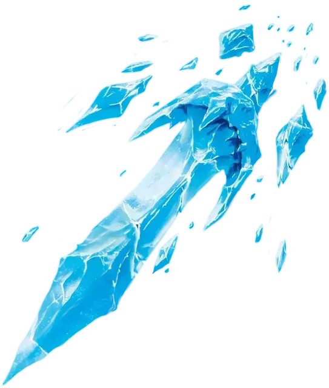

Ледяной кинжал
Ice Knife
1 уровень, Вызов

Время сотворения 1 действие
Дистанция 60 футов
Компоненты С, М (капля воды или кусочек льда)
Длительность Мгновенная
Классы Волшебник, Друид, Чародей
Вы создаёте осколок льда и метаете его в одно существо, находящееся в пределах дистанции. Совершите по цели дальнобойную атаку заклинанием. При попадании цель получает 1к10 колющего урона. После этого, вне зависимости от попадания или промаха, осколок взрывается. Цель и все существа в пределах 5 футов от места взрыва осколка должны преуспеть в спасброске Ловкости, иначе получат 2к6 урона холодом.
На больших уровнях. Если вы накладываете это заклинание, используя ячейку 2-го уровня или выше, то урон холодом увеличивается на 1к6 за каждый уровень ячейки выше 1.